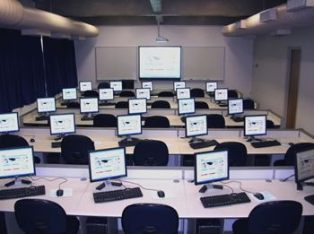

¿Por qué TOTAL UNIVERSITY?
Dentro de la comunidad educativa, en cuanto a estudios superiores en el ambito de las TIC y Nuevas Tecnoliogías, estamos a la cabeza de las principales universidades del país.
Aportamos los sistemas pedagógicos más avanzados, junto a la disposición de material y equipamiento de última generación, para ofrecer un concepto distinto de la formación universitaria.

¿Cómo elegir?
Preguntando se llega a Roma, reza el dicho popular. Preguntanos, pues disponemos de un eficáz servicio de orientación que resolvera tus dudas.
Si estás pensando en estudiar tu carrera con nosotros, eres bienvenido. Te ofrecemos la posibilidad de elegir gran variedad de estudios, en un intento de abarcar las especialidades que son, hoy por hoy, fundamentales en el desarrollo de las nuevas tecnologías, como soporte y herramienta a la sociedad actual.
A modo de introducción, le proponemos un pequeño test de diez preguntas relacionadas con la programación, diseño web o informática en general. Entre estas encontrará preguntas de selección, introducción de texto y selección múltiple, entre otras. Inténtelo, es sólo una prueba.
Dispone de 15 minutos para completar la prueba y, una vez concluida, puede comprobar los resultados con sólo pulsar el botón al final de la página. Pulse sobre el enlace superior 'Instrucciones...' para conocer detalles del desarrollo de la misma. ¡Animo! Tan sólo se trata de valorar, por si mismo, su nivel general en el ambito de acción y aplicación de su posible futuro profesional.